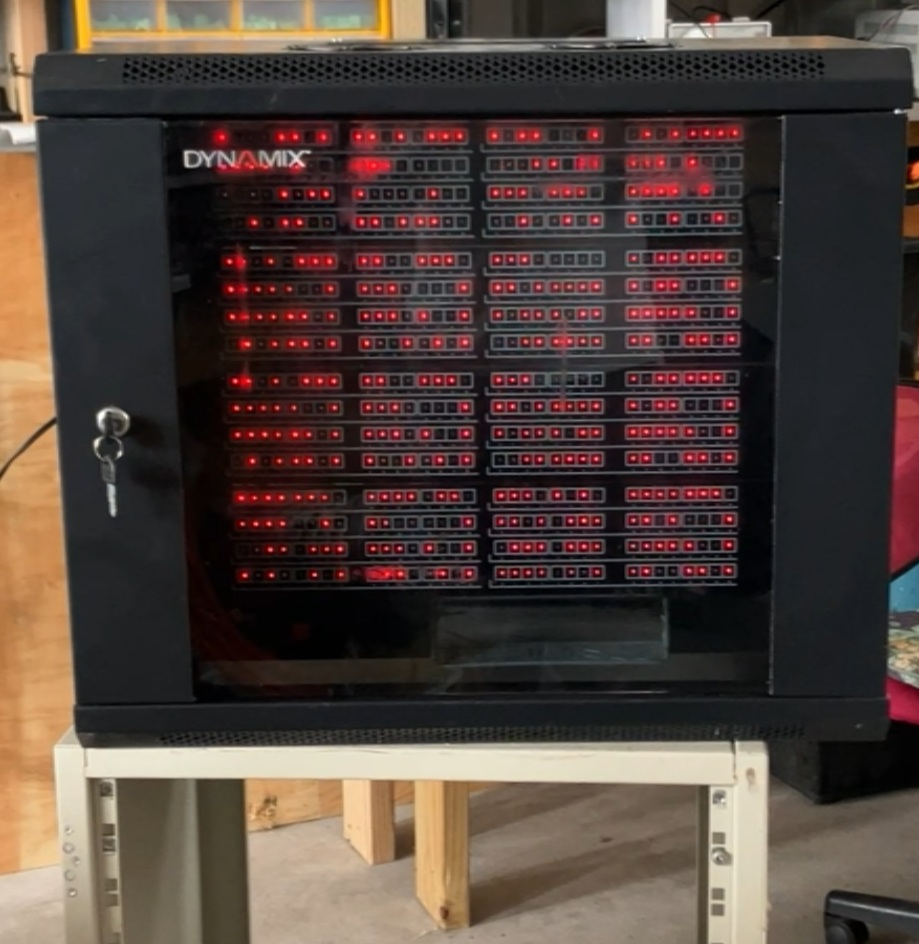
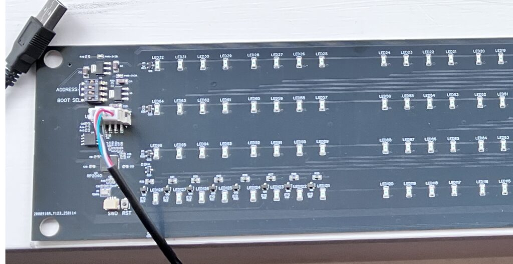
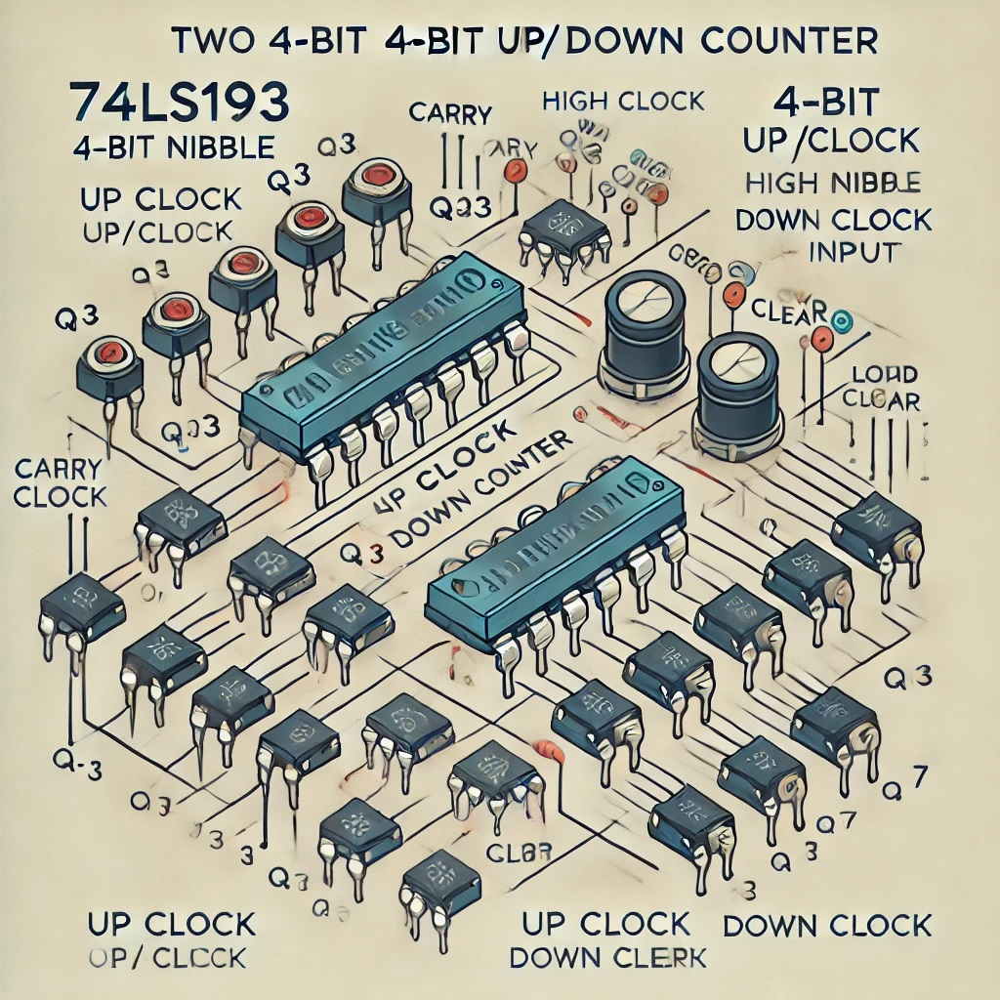

Got my updated design back from JLPCB on Friday and this morning decided to test them and have a go at programming them. While I have done a hardware RP2040 design for a customer before I have never actually gotten around to programming one.

The changes to the original blinkenlights are:
- RP2040 Microcontroller
- Reversed the numbering on the silk screen (Once I saw this mistake I could not unsee it!)
- Connects via USB cable (No host PC required, can just be used for power and it will blink)
The first thing of note is that the guy I made the boards for wanted the RP2350 (the worthy successor to the RP2040), but that chip is unfortunately not available anywhere, though rumours are they are on their way and may be in stock by the time you read this! Why the guy wanted a chip so capable for basically blinking some LED’s is beyond me, but he was so keen to get the boards he went for the older RP2040, which is still far too powerful for the task, however with both chips being under US$1.00 I guess I should just stop asking stupid questions!
The design is a bit easier as the RP2040 has 30 GPIO pins, this means we don’t have to resort to any weird external chips and can just drive the 8 rows of 16 LEDs directly through MOSFETS, though I need to move everything from 5V to 3.3V. The spare pins connected to a 4-pin dip-switch the only use at the moment for this is to ensure differing panels have different random light sequences but could also be read by the host to send different info to different panels if this functionality is programmed.
As the guy is away for a few weeks I decided I would check them out myself. Previously I have checked the RP2040 is working by simply setting the BOOT SEL switch, to disable the flash chip, and plugging the USB into my PC. If all was well, a new drive would appear in the file manager as a mounted USB Drive with two readable files. As this part worked I thought I would try and be smart and take a ride with ChatGPT to see if I could convert my original PIC C code to the RP2040.
TLDR; The hardware is fine, the LEDs blink, but buggered if I could get the USB/CDC serial interface working in the few hours allocated.

Note I decided to move the BOOT SEL switch back to a push-button in the final design, even though the DIP switch did make it easier to use without having three hands.
If you want to make this project, again all the files are here => OSHWLab
If you don’t like that, then all the files are also zipped up here => zip-files
No licence, everything public domain.
My journey with a new Microcontroller and ChatGPT. (from zero to hero!)
OK so this morning I knew as much as your average PIC programmer about VS Code, Pico SDK’s or any of the workings of the RP2040 outside of the (meager) hardware design reference which I used 18 months previous for another board design.
After having my usual Sunday stroll up Blenheim’s own Mount Vernon, a 400M high stroll, with a bunch of other old farts, I sat down at my PC at 1PM and opened the getting started with the Pico guide, followed the quite good instructions and compiled my first blink program in C.
The only bits that caused an issue were the fact I have never used VS Code before and the first project I created took about 10 minutes to even show up as it silently downloaded the SDK. Of course me being impatient closed VS Code after a minute of nothing seeming to happen, then I noticed the little messages at the bottom right of the IDE and decided to let it do its thing. All good after then, though man, that IDE is really slow!
With blinky LED under the belt I decided to ask ChatGPT to create me a bare RP2040 C Program with a 1mS interrupt, which it nicely did, and I proceeded to modify the interrupt to put the LED scan code. Pressing compile totally failed as I forgot about the make file, CMakeList.txt. Now make files are usually handled by whatever IDE I am using, MPLABX or STM32 cube, I never need to touch them and never do anything fancy with them, having it exposed to a newbie like me was a bit of a shock, (Sigh, why did Pascal never catch on!) luckily ChatGPT to the rescue.
Now ChatGPT has been pretty good and getting better, but I know it’s limitations. The perfect example of this was a few weeks ago after it gave me the perfect description how to connect some 74LS193 counters on my retro-computer. A very upbeat naive version of me then asked it for a schematic, and what I got was below!

So WTF! Yes it will make a good t-shirt to mock our AI overlords in the future, but as it stands, AI is not quite at the level of replacing an EE. (yet!)
Anyway, back to the story. I was a bit shocked with the number of configurations you needed in the CMakeList.txt file, e.g. just including a file in the C code before was good enough, but the compiler here will not do anything unless the make file knows about it. I guess there is some logic, since there are about a million C libraries out there.
Anyway, to my surprise on first compiling my program and dropping the UF2 file onto my RP2040 USB drive it worked! Hi Five to me and ChatGPT, the winning combo!
Except it didn’t work as none of the USB serial part worked and no matter what prompts I fed to it, I did not get a resolution to my problem. But the lights blink magically!
Anyway it does seem a nice chip to work with, and I may look into it (and the RP2350 when available) a bit more for my home and professional projects in the future. As for ChatGPT, it is scarily good, and like a good politician very persuasive even when it is wrong, unlike a politician though it should be able to fix its mistakes. Welcome to the future!
Note from future self: I fixed the code in about an hour in MMBasic => here, it might be a lot easier to understand if C is not your scene and/or you just want it working.